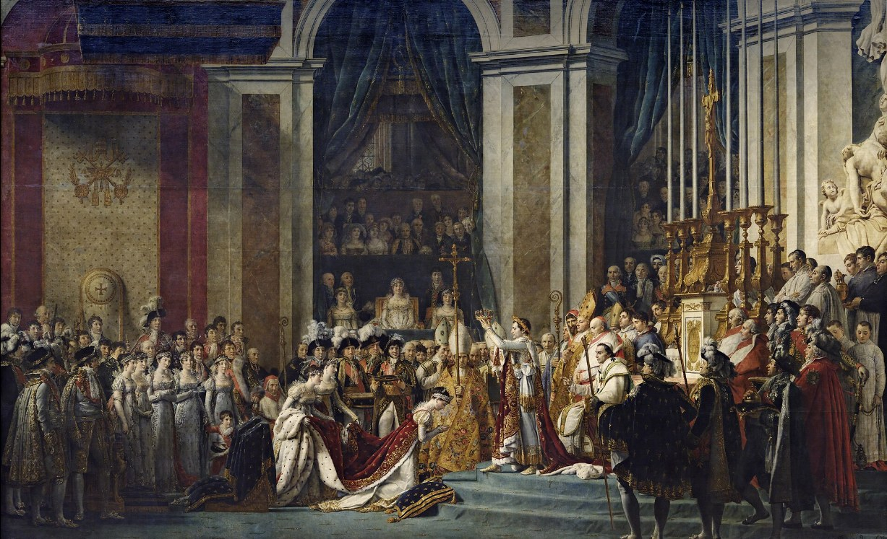

눌러서 크게 보기
나폴레옹 1세의 대관식
작가
자크 루이 다비드 (1748–1825)
제작
1805–1807년, 캔버스에 유채
크기
621 × 979cm
소장
루브르 박물관, 파리
우리 학교 갤러리 · 1화
누가 영웅을 만드는가
자크 루이 다비드 〈나폴레옹 대관식〉
문장을 누르면 그 대목부터 들을 수 있습니다.
10
10
재생을 누르면 해설이 시작됩니다
0:00 / 8:07
1.0×
따라가기
나폴레옹 1세의 대관식 · 좌우로 움직여 보세요
닫기